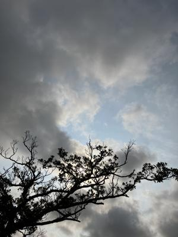
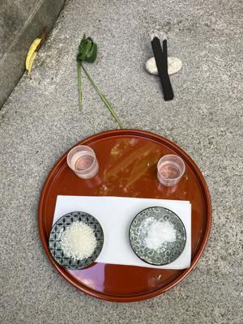

うるがいの話 ある日
最新: 屋敷うがん【うるがいの話 ある日】とは 一日だけのプログです
『うるがいの話』の最新一日だけのプログで、通信料が少なく経済的だ。カニの画像をクリックすると全ての日付が載る『うるがいの話』サイトを表示します
|
|
【うるがいの話】 うるがい(ｳﾙｶﾞｲ urugai)とは、『もずくがに』の名前でとても大きくなります。 |
|---|---|
|
|
【カミマヤーの話】 猫のことを方言でマヤーといいます。カミマヤー（kamimayaa）とは、神の猫のことです。 |
|
【たながぁの音楽】 たながぁ（ﾀﾅｶﾞｰ tanagaa）とは手長えびのことで、何種類かあり大きいのは車 エビぐらいになります。 |

|
【ぶながぁの話】 ぶながぁ(ﾌﾞﾅｶﾞｰ bunagaa)とは、赤い髪の毛、赤い身体、そして身長は１ｍ２０ｃｍ ぐらい、川の蟹を食べているの目撃された。場所は沖縄県国頭郡大宜味村のと ある村僕の隣近所に住んでいる爺さんから、聞いた話です。 |
|
|
【ギーマの話】 ギーマ(giima)とは、山原の里山に咲くスズランに似た、 花を付けます。実は食べられます、 気が付くと口の周りが紫になっています。 |
2024年03月24日 (日）屋敷うがん
17:50
 
サリ、アートートー、ウートートー
ちゅうは２０２４年辰年（たつどし）の２月１５日（旧暦）やーびん
わんや、那覇市●●●●●●●にすみちょうる
●年（●●●どし） ●●年ウマリのうるがい
■年（■■■どし） ■■年ウマリのうるがい
ヤーニンジュやーびん
今日のよい日に屋敷の拝みをいたします。
十二本三本の線香と洗い溝めたお米とお酒、
お塩をお供えいたしまして
うるがい家の男と妻のお願いを申し上げます。
1.火の神（ヒノカン）
2.北の神様、
3.東の神様、
4.南の神様、
5.ご門の神様、
6.西の神様、
7.便所の神様
この家屋敷をお守りくださいましてありがとうございます。
どうぞ、これからも、
この家屋敷に魔物、病魔、他人の災いが来ませんようにお守りくださり、
この家屋敷に何の
災い、異変がありませんように。
二月の場合》
天神からたくさんの徳がありますよう
今年一年上半期神々の光でこの家屋敷を
お守りください。
言葉の不足や失礼は
未熟者ですのでお見逃しください。
サリ。アートートー、ウートートー
１７時４３分 ビットコインの総資産 ￥２８、５１０（↓６８４）